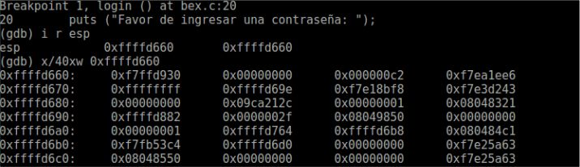

Buffer Overflows POC - Análisis de Stack, su organización y explotación
He visto bastante información sobre este tema, aunque lamentablemente no en Español. Es por ello que les comparto una POC de las vulnerabilidades "Buffer Overflow"
20 April 2017

DISCLAIMER: El contenido de este artículo tiene como propósito compartir información para fines educativos. No me hago responsable de cualquier acto ilícito realizado con la información siguiente. No vulneres sistemas ajenos a los tuyos. El conocimiento es libre.
He visto bastante información sobre este tema, aunque lamentablemente no en Español. Es por ello que les comparto una POC de las vulnerabilidades "Buffer Overflow" o desbordamientos de memoria. Para ello utilizaremos un código vulnerable el cual valida si se ha ingresado la contraseña correcta. Si es así, nos dará acceso a una shell de tipo "/bin/bash" en el sistema. De lo contrario, nos mostrará un mensaje de denegación de acceso, posteriormente terminando.
La prueba de concepto está disponible en mi canal de youtube. Sin embargo, me gustaría que leyeran la siguiente información que les puede interesar. El código vulnerable estará disponible en mi github, sin embargo sería de mucha ayuda que intentaran escribir el código ustedes mismos (si, practicamente transcribirlo). Cualquier duda existente pueden contactarme por MP o comenten en la caja de comentarios de abajo.
BUFFER OVERFLOW VULNERABILITIES
Acorde a Wikipedia, un desbordamiento de memoria ocurre cuando un buffer llega a afectar el valor de las variables establecidas en otras direcciones de memoria diferentes, las cuales se encuentran adyacentes.
STACK: ESP Y EBP
El Stack o pila de memoria, es una estructura de organización de información durante la ejecución de un programa también denominado como de tipo LIFO (Last In Firts Out [Ultimo en entrar, primero en salir]). Se puede hacer una comparación del Stack con una máquina expendedora, donde el último producto que entra, es el primero que sale. El Stack cuenta con muchas partes, pero nos enfocaremos en dos muy importantes (en el video se abordarán de manera más profunda): ESP y EBP.
ESP: Es un puntero a la dirección de memoria en donde nos encontramos actualemente (Current Stack Pointer). Está en la parte superior del Stack.
EBP: Es el puntero a la dirección de memoria base del Stack (Base Stack Pointer) Es la parte base del Stack.
En el siguiente diagrama lo podemos visualizar de mejor manera:

POC Y TUTORIAL
El código para la POC
https://www.github.com/krhertz/bof-exe
TROUBLE SHOOTING
En caso de que no funcione la instrucción:
sudo gcc -m32 -gdwarf-2 -fno-stack-protector codigo.c
Hay que instalar el paquete "gcc-multilib":
sudo apt-get install gcc-multilib
Este contiene las dependencias necesarias para generar binarios de x86 en un sistema x64.
- Es necesario instalar la herramiente gdb (que normalmente está instalada en todas las versiones de GNU/Linux).
Espero y esta información les sea de interés. Compartanla, que la información es libre.
Exploiting vulnerabilities, creating new ways through Happy Hacking!!!